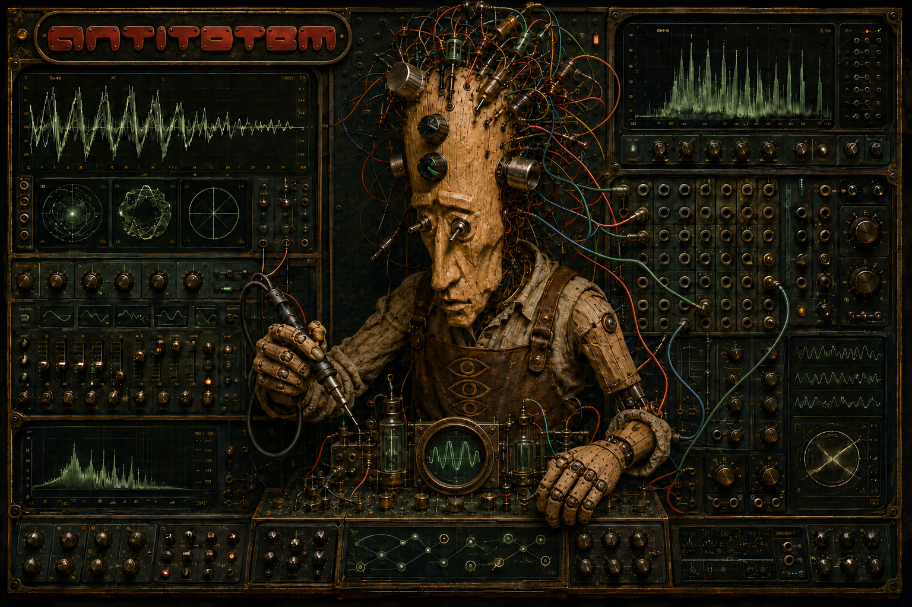

Objet Sonore
Instrument modulaire autonome JUCE/C++20, précurseur et parrain de la famille RASGO. Cinq oscillateurs, scanner 16 pas, ADSR, VCF multimode, bruits et S&H, retours, effets, mixeur, oscilloscope permanent et enregistrement WAV/MIDI/MusicXML.
Télécharger
Version v0.1.3 — choisissez votre système ; le téléchargement démarre directement :
Si, au premier lancement, Windows ou macOS indique que le programme n’a pas pu être vérifié ou qu’il pourrait contenir un logiciel malveillant (ou affiche un message semblable), ne le supprimez pas : suivez les étapes de Installation ci-dessous pour l’autoriser. Toutes les versions, y compris de test : page des releases.

Prérequis minimaux
Système
Windows 10 ou 11, 64 bits · macOS 10.13+ (Intel) ou 11+ (Apple Silicon), un seul paquet Universal 2 · Linux x86-64 avec glibc 2.35+ (distributions de 2022 et après).
Ordinateur (mesuré)
Sur un Intel Core i5-6500 (2015, 4 cœurs, 3,2 GHz) : l’application entière utilise environ 60 % d’un cœur ; le moteur sonore seul 10–11 % à 44,1/48 kHz, au pire. Mémoire : environ 45 Mo. Tout ordinateur 64 bits à deux cœurs et 4 Go suffit ; les machines plus faibles n’ont pas été testées.
Pour compiler
- CMake ≥ 3.22
- Compilateur C++20 (GCC/Clang)
- Un checkout local de JUCE
- Un périphérique audio (ALSA/PipeWire)
Ce que demande le .deb
libasound2,libfontconfig1,libfreetype6libx11-6,libxext6,libxss1- GLib (
libglib2.0-0),libstdc++6,libc6
Installation
Windows
- Ouvrez le
.exe. Une fenêtre bleue « Windows a protégé votre ordinateur » apparaît : cliquez sur « Informations complémentaires », puis « Exécuter quand même ». - Si l’autorisation d’administrateur est demandée, cliquez sur « Oui ».
- « Suivant » jusqu’au bout ; la dernière page propose déjà « Lancer Antitotem ». Il est ensuite dans le menu Démarrer et sur le bureau.
Sans installer : décompressez le .zip et ouvrez Antitotem - Objeto Sonoro.exe. Si vous avez encore la v0.1.0 et qu’elle ne s’ouvre pas, installez le Visual C++ Redistributable de Microsoft — inutile à partir de la v0.1.1. Si le raccourci du menu Démarrer de la v0.1.0 ou v0.1.1 n’ouvre pas le programme, installez la version la plus récente par-dessus. Si plusieurs versions sont installées, désinstallez les anciennes dans Paramètres → Applications ; à partir de la v0.1.3, chaque nouvelle version remplace la précédente toute seule.
macOS
- Ouvrez le
.dmget glissez Antitotem dans Applications. - Ouvrez l’app. macOS la bloque en disant qu’Apple n’a pas pu confirmer qu’elle ne contient pas de logiciel malveillant — ce n’est pas un défaut. Cliquez sur « OK » (pas « Placer dans la corbeille »).
- Dans Réglages Système → Confidentialité et sécurité, cliquez sur « Ouvrir quand même », confirmez avec votre mot de passe, puis « Ouvrir ». Seulement la première fois. Sous macOS 14 ou antérieur : clic droit sur l’app → Ouvrir → Ouvrir.
Si le bouton n’apparaît pas ou si le blocage persiste, ouvrez le Terminal (Applications → Utilitaires), collez xattr -dr com.apple.quarantine "/Applications/Antitotem - Objeto Sonoro.app" et appuyez sur Entrée ; ouvrez ensuite l’app normalement. Cela corrige aussi le « endommagée » de la v0.1.0.
S’il ne s’ouvre toujours pas, écrivez à rasgo.instruments@gmail.com en indiquant la version de macOS, le modèle du Mac et le message affiché.
Linux
- Ubuntu 22.04+, Debian 12+, Mint 21+ : double-cliquez sur le
.deb, ousudo apt install ./antitotem-0.1.3-Linux.deb. - Fedora, Arch, openSUSE et autres : l’AppImage (rendez-la exécutable et ouvrez-la) ou le .tar.gz (décompressez et lancez
./install.sh, qui installe pour votre utilisateur, sans root).
Les trois paquets Linux sont testés au lancement sur Debian 12, Ubuntu 24.04, Fedora et Arch avant chaque version.
Guide complet, avec prérequis et dépannage, dans INSTALL.md (anglais et portugais).
Compiler depuis les sources
Une alternative pour celles et ceux qui préfèrent compiler plutôt qu'utiliser les installeurs prêts :
Récupérer le code
git clone https://github.com/lucioaraujo/antitotem.git puis entrez
dans le répertoire.
Compiler et lancer directement
Le plus simple pour un usage immédiat — compile et ouvre la version actuelle :
./run_antitotem.shOu générer le paquet .deb vous-même
cmake -S . -B build -DCMAKE_BUILD_TYPE=Release \
-DANTITOTEM_JUCE_PATH=/chemin/vers/JUCE
cmake --build build --target AntitotemSimpleSequencerApp -j
cd build && cpack -G DEB
sudo dpkg -i antitotem-0.1.0-Linux.deb
sudo apt-get install -f # si une dépendance manquePrérequis de compilation, tests du core et dépannage dans le INSTALL.md.
Crédits
Auctorialité
Lúcio Araújo — conception, DSP, interface et tout le code de ce prototype.
Origine
Antitotem 2013 : installation sonore urbaine sélectionnée par l'appel nº 090/12 (Recherche et Production en Art Numérique) de la Fundação Cultural de Curitiba, avec le soutien du Fonds Municipal de Culture. Site du projet original : antitotem.arquiviagem.net.
Framework
JUCE (audio, interface et application) — dépendance double licence AGPLv3/commerciale ; ce projet utilise la voie AGPLv3.
Licence
Code sous AGPLv3 ou ultérieure. Les schémas et images de recherche cités dans la liste complète gardent leurs propres droits et ne sont pas distribués avec ce dépôt.